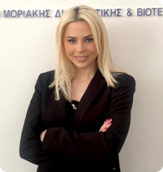

Μοριακή Βιολόγος · Γενική Διευθύντρια
Ταουσάνη Μαρία
Επικεφαλής Μοριακή Βιολόγος του εργαστηρίου, με εξειδίκευση στη Μοριακή Βιολογία και τη Γενετική. Διασφαλίζει την ποιότητα και την ακρίβεια των υπηρεσιών του BIOLAB, συμμετέχοντας ενεργά στις εξελίξεις της μοριακής διάγνωσης.
- Ακαδημαϊκές σπουδές
- Απόφοιτη του Τμήματος Βιολογίας του Αριστοτελείου Πανεπιστημίου Θεσσαλονίκης, με μεταπτυχιακό στη Γενετική Ανθρώπου και Γενετική Συμβουλευτική από το Πανεπιστήμιο Θεσσαλίας.
- Ερευνητική δραστηριότητα
- Συμμετοχή σε πολυάριθμες ερευνητικές μελέτες και διατριβές σε θέματα όπως ο διαβήτης τύπου 1 και ο κληρονομικός καρκίνος του μαστού.
- Εξειδίκευση
- Διαχείριση συστημάτων ποιότητας ISO 9001, με πιστοποιήσεις από τους οργανισμούς TÜV HELLAS και CQI/IRCA.
- Συμμετοχή σε οργανισμούς
- Μέλος του European Board of Medical Genetics, της European Society for Clinical Cell Analysis και της Ελληνικής Εταιρείας Κυτταρομετρίας Ροής.